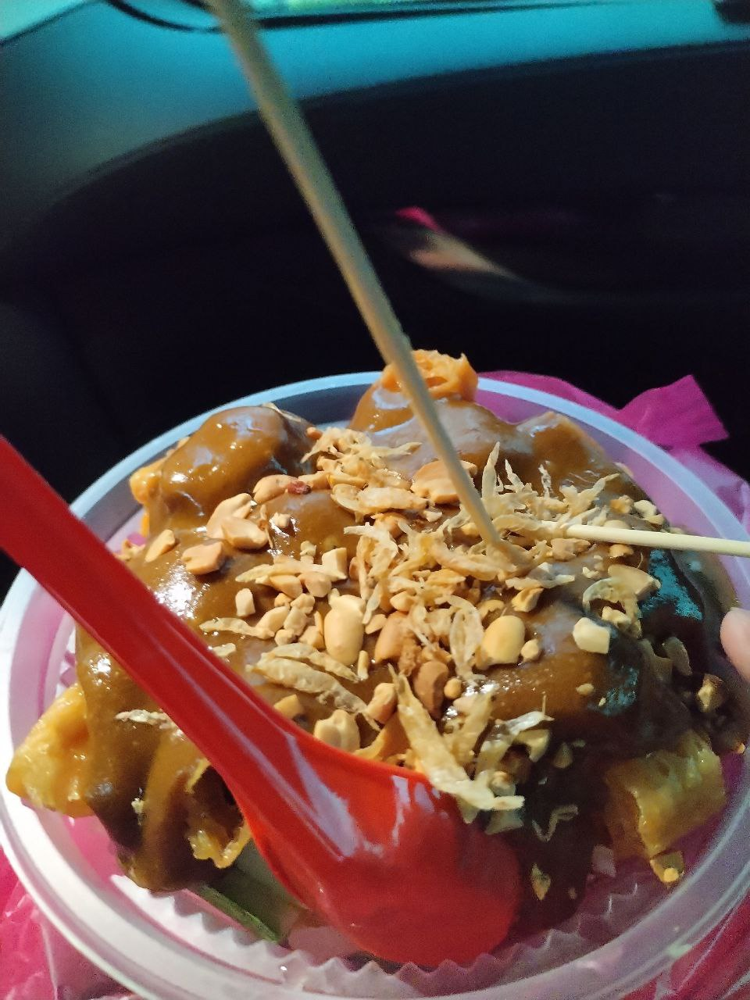
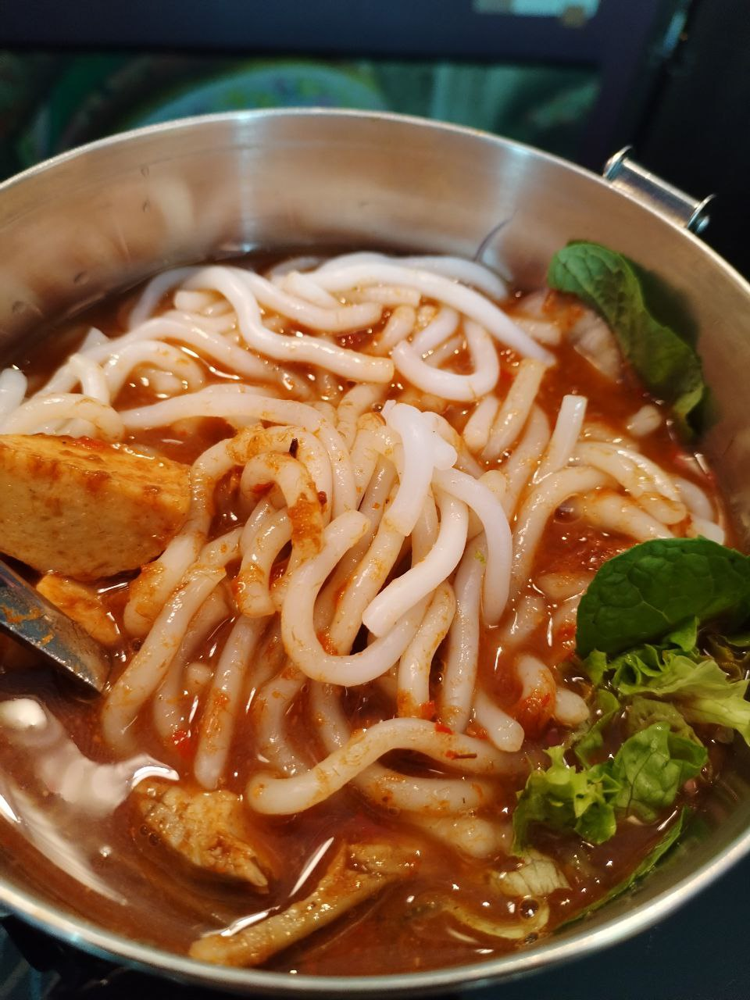

The sea water is crystal clear and the shades of blue and green are mesmerizing. I spend my time with my family on the beach, we listen to the sound of the waves crashing onto the shore, and enjoy the warm sun.
- Penang Char Kuey Teow
- Rojak 
- Asam Laksa 
- Egg Tarts with Bird's nest

The famous Penang Char Kuey Teow is a dish made of stir-fried rice noodles with shrimp, bean sprouts, and egg.
This is from Hock Seng Rojak King at Macallum Street. This is very special and nice as they pairs rojak with their own gooey Malt Sugar Paste. There are a lot of customer every day, my family and I had wait in line for 2 hours to taste this famous rojak.
Penang Asam Laksa is truly fulfilled my expectations for a satisfying bowl of asam laksa which is sweet, sour and spicy. With a smorgasbord of slurpy white rice noodles, shredded fish, sliced pineapples, cucumber, onions, red chillis, lettuce, mint leaves steeped within the tamarind-flavoured soup base.

This is from 92 Armenien in Penang, the unique of their food is they incorporated bird nest into different food including their signature egg tarts. Bird's nest can help us to maintain youthfulness and enhance complexion that important for our health.

This is the famous painting in Penang which known as Little Children on a Bicycle. What special is it depicts a little girl taking her younger brother on a bicycle ride. The joy in their faces echoes down the street, providing a ray of cheer and adding character to the street.